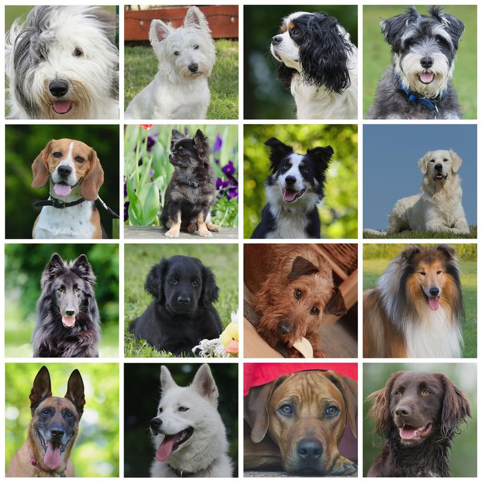
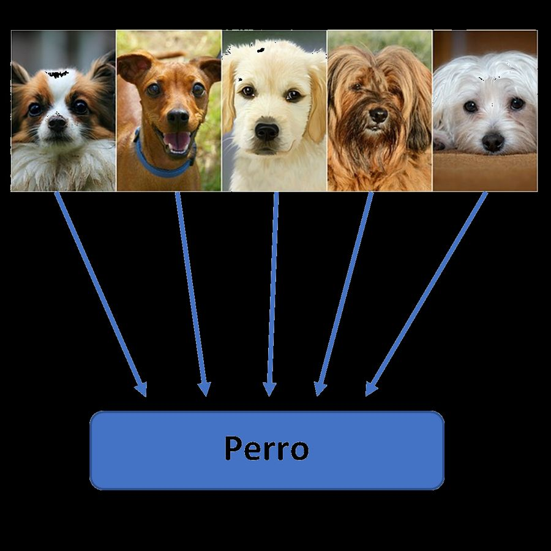
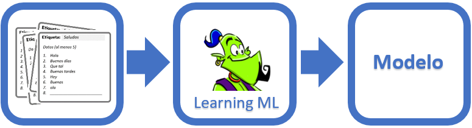

De qué va esta sesión
Hoy empieza el reto. Antes de tocar ninguna herramienta necesitas entender qué está pasando por dentro cuando una máquina «reconoce» una imagen: qué son los ejemplos, las etiquetas, el entrenamiento y el modelo. Y por qué la calidad de tus ejemplos decide el resultado.
1. Un ordenador no ve una foto: ve números
Donde tú ves una mano, el ordenador ve una rejilla de miles de píxeles, cada uno con tres números (cuánto rojo, cuánto verde, cuánto azul). Nada más. No hay «mano» por ningún lado.
Entonces, ¿cómo puede distinguir una mano abierta de un puño? Igual que lo aprendiste tú: viendo muchos ejemplos hasta captar el patrón.
2. Cómo aprendiste tú lo que es un perro

Nadie te dio una definición técnica de «perro». No te dijeron «cuadrúpedo de entre 20 y 90 centímetros con hocico alargado y pabellones auriculares móviles». Simplemente, alguien te fue señalando perros: «mira, un perro», «ese también es un perro».
Con unas decenas de ejemplos ya sabías reconocer perros que no habías visto nunca. Eso es generalizar.

Actividad 5 — El caso difícil
Esto es un perro (raza puli). Sin embargo, mucha gente que lo ve por primera vez duda. En equipo, responded:
- ¿Por qué cuesta reconocerlo como perro?
- Si hubieras aprendido lo que es un perro viendo solo pastores alemanes, ¿qué pasaría al ver este?
- Traducidlo a vuestro reto: si entrenáis el reconocedor de signos con una sola mano y un solo fondo, ¿qué creéis que pasará cuando lo pruebe otra persona?
3. Las tres fases del aprendizaje supervisado
El tipo de aprendizaje que vais a usar se llama supervisado porque una persona (vosotros) le dice a la máquina la respuesta correcta de cada ejemplo. Tiene siempre tres fases:

| Fase | Qué ocurre | Quién lo hace |
|---|---|---|
| 1. Entrenamiento | Se reúnen ejemplos y se etiqueta cada uno con la clase a la que pertenece. | Tú. Es trabajo manual y es el que más importa. |
| 2. Aprendizaje | Un algoritmo analiza todos los ejemplos, busca patrones y construye el modelo. | La máquina, en unos segundos o minutos. |
| 3. Evaluación | Se prueba el modelo con ejemplos nuevos, que no se usaron para entrenar, y se mira si acierta. | Tú otra vez, y sin hacer trampas. |
La regla de oro de la evaluación
Probar el modelo con las mismas imágenes con las que lo entrenaste es como hacer un examen con las respuestas delante: siempre saldrá bien y no te dirá nada. Guarda siempre unas cuantas imágenes sin usar para probar.
4. Agentes inteligentes
Un agente inteligente es un sistema que percibe su entorno, decide y actúa sobre él. Siempre el mismo bucle:
Un robot aspirador es un agente: percibe con sus sensores, decide hacia dónde ir y se mueve. Vuestro reconocedor de signos también lo será: percibirá con la cámara, decidirá qué signo es y actuará mostrando la palabra en pantalla.
Actividad 6 — Formad los equipos y repartid papeles
A partir de ahora trabajáis en equipo. Repartíos estos cuatro papeles (pueden rotar, pero cada sesión alguien es responsable de cada uno):
| Papel | De qué responde |
|---|---|
| Datos | Que las imágenes sean suficientes, variadas y estén bien etiquetadas. Guarda el archivo .json al terminar cada sesión. |
| Entrenamiento | Ejecutar el aprendizaje, probar el modelo y anotar los resultados. |
| Programación | El programa de Scratch que usa el modelo. |
| Presentación | La demo final y la reflexión de la S7. |
Anotad el reparto: forma parte de la entrega del reto.
Vocabulario de la sesión
- Clase (o etiqueta): cada una de las categorías que el modelo debe distinguir. En vuestro reto, cada signo será una clase.
- Conjunto de datos (dataset): todos los ejemplos etiquetados que usáis para entrenar.
- Entrenar: ejecutar el algoritmo que construye el modelo a partir del conjunto de datos.
- Confianza: el porcentaje de seguridad con el que el modelo da su respuesta.
Lista desordenada
Ordena correctamente las fases del aprendizaje supervisado
- Reunir imágenes de ejemplo
- Etiquetar cada imagen con su clase
- Ejecutar el algoritmo de aprendizaje
- Obtener el modelo
- Probar el modelo con imágenes nuevas
- Si falla, añadir más imágenes y volver a entrenar
Relaciona
Relaciona cada tarjeta con su pareja.
Relaciona cada tarjeta con su pareja.
","showMinimize":false,"itinerary":{"showClue":false,"clueGame":"","percentageClue":40,"showCodeAccess":false,"codeAccess":"","messageCodeAccess":""},"cardsGame":[{"url":"","x":0,"y":0,"author":"","alt":"","audio":"","color":"#000000","backcolor":"#ffffff","eText":"Clase","urlBk":"","xBk":0,"yBk":0,"authorBk":"","altBk":"","audioBk":"","colorBk":"#000000","backcolorBk":"#ffffff","eTextBk":"Cada%20categor%C3%ADa%20que%20el%20modelo%20debe%20distinguir"},{"url":"","x":0,"y":0,"author":"","alt":"","audio":"","color":"#000000","backcolor":"#ffffff","eText":"Conjunto%20de%20datos","urlBk":"","xBk":0,"yBk":0,"authorBk":"","altBk":"","audioBk":"","colorBk":"#000000","backcolorBk":"#ffffff","eTextBk":"Todos%20los%20ejemplos%20etiquetados%20con%20los%20que%20se%20entrena"},{"url":"","x":0,"y":0,"author":"","alt":"","audio":"","color":"#000000","backcolor":"#ffffff","eText":"Modelo","urlBk":"","xBk":0,"yBk":0,"authorBk":"","altBk":"","audioBk":"","colorBk":"#000000","backcolorBk":"#ffffff","eTextBk":"El%20resultado%20del%20entrenamiento"},{"url":"","x":0,"y":0,"author":"","alt":"","audio":"","color":"#000000","backcolor":"#ffffff","eText":"Generalizar","urlBk":"","xBk":0,"yBk":0,"authorBk":"","altBk":"","audioBk":"","colorBk":"#000000","backcolorBk":"#ffffff","eTextBk":"Acertar%20con%20ejemplos%20que%20no%20se%20usaron%20al%20entrenar"},{"url":"","x":0,"y":0,"author":"","alt":"","audio":"","color":"#000000","backcolor":"#ffffff","eText":"Confianza","urlBk":"","xBk":0,"yBk":0,"authorBk":"","altBk":"","audioBk":"","colorBk":"#000000","backcolorBk":"#ffffff","eTextBk":"Porcentaje%20de%20seguridad%20de%20una%20respuesta"},{"url":"","x":0,"y":0,"author":"","alt":"","audio":"","color":"#000000","backcolor":"#ffffff","eText":"Agente%20inteligente","urlBk":"","xBk":0,"yBk":0,"authorBk":"","altBk":"","audioBk":"","colorBk":"#000000","backcolorBk":"#ffffff","eTextBk":"Sistema%20que%20percibe%2C%20decide%20y%20act%C3%BAa"}],"isScorm":0,"textButtonScorm":"Guardar la puntuación","repeatActivity":true,"weighted":100,"textAfter":"","version":2,"percentajeCards":100,"type":0,"showSolution":true,"timeShowSolution":3,"time":3,"evaluation":false,"evaluationID":"f96bc37c-5aaf-40e4-af65-a544218a46a6","id":"idevice-1785402683246-jziya90z7","msgs":{"msgSubmit":"Enviar","msgClue":"¡Genial! La pista es:","msgCodeAccess":"Código de acceso","msgPlayStart":"Pulsa aquí para jugar","msgScore":"Puntuación","msgErrors":"Errores","msgHits":"Aciertos","msgMinimize":"Minimizar","msgMaximize":"Maximizar","msgFullScreen":"Pantalla Completa","msgExitFullScreen":"Salir del modo pantalla completa","msgNoImage":"Pregunta sin imágenes","msgEndGameScore":"Comience la partida antes de guardar la puntuación.","msgScoreScorm":"La puntuación no se puede guardar porque esta página no forma parte de un paquete SCORM.","msgOnlySaveScore":"¡Solo puede guardar la puntuación una vez!","msgOnlySave":"Solo puede guardar una vez","msgInformation":"Información","msgYouScore":"Su puntuación","msgAuthor":"Autoría","msgOnlySaveAuto":"Su puntuación se guardará después de cada pregunta. Solo puede jugar una vez.","msgSaveAuto":"Su puntuación se guardará automáticamente después de cada pregunta.","msgSeveralScore":"Puede guardar la puntuación tantas veces como quiera","msgYouLastScore":"La última puntuación guardada es","msgActityComply":"Ya ha realizado esta actividad.","msgPlaySeveralTimes":"Puede realizar esta actividad cuantas veces quiera","msgClose":"Cerrar","msgAudio":"Audio","msgNumQuestions":"Número de tarjetas","msgTryAgain":"Necesitas al menos %s% de respuestas correctas para obtener la información. Inténtalo de nuevo.","msgEndGameM":"Has completado el juego. Tu puntuación es %s.","msgUncompletedActivity":"Actividad no completada","msgSuccessfulActivity":"Actividad superada. Puntuación: %s","msgUnsuccessfulActivity":"Actividad no superada. Puntuación: %s","msgTypeGame":"Relaciona","msgCheck":"Comprobar","msgRestart":"Reiniciar"}}